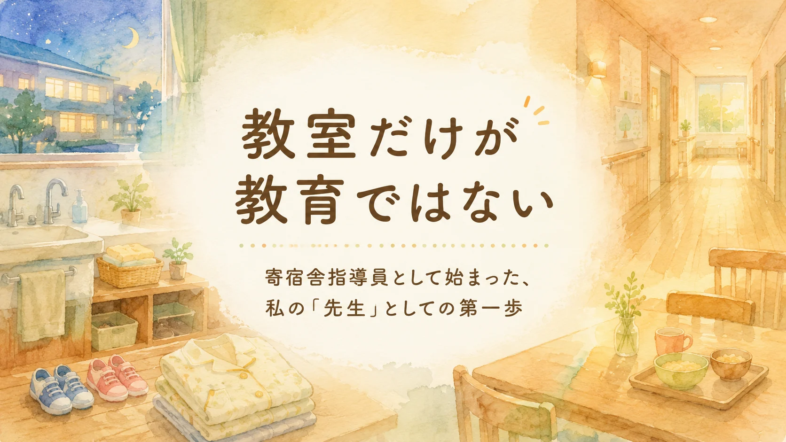

代表コラム
教室だけが教育ではない
寄宿舎指導員として始まった、私の「先生」としての第一歩

1997年4月1日から2026年3月31日まで、私は教育の現場で働き、ずっと「先生」と呼ばれてきました。
長くこの仕事を続けてきたので、少しくらいは教育に関する経験値もたまってきたのではないか。
そろそろ「教育者」と名乗ってもよいのではないか。
そんなことを、少しだけ思うこともあります。
けれど、どんな仕事にも最初があります。
いわゆる「ベテラン」と呼ばれるようになった私にも、当然ながら「初めての現場」がありました。
私の初仕事は、寄宿舎での勤務でした
私の教育の仕事は、教室から始まったわけではありません。
私の初仕事は、1997年4月から1998年3月までの1年間、養護学校、現在でいう特別支援学校に併設された寄宿舎で働くことでした。
当時の呼び名では「寮母」。
現在の言い方では、寄宿舎指導員です。
寄宿舎指導員の仕事は、学校から帰ってきた子どもたちと、放課後から翌朝まで一緒に過ごしながら、日常生活の指導や支援を行う仕事です。
食事、排せつ、入浴、着替え、就寝準備。
子どもたちの生活そのものに深く関わります。
教室で教科を教える仕事とは、少し違います。
黒板の前に立って授業をするのではなく、暮らしの中で子どもたちを支える。
言うならば、「暮らしの先生」のような役割だったのかもしれません。
生活を支えることも、教育の一部だった
もちろん、楽なことばかりではありませんでした。
夜中に「トイレに行きたい」と起こされることもありました。
子ども一人ひとりの生活リズム、体調、気持ち、こだわり、不安に合わせた対応も必要でした。
同じ声かけでうまくいく子もいれば、うまくいかない子もいます。
昨日できたことが、今日は難しいこともあります。
反対に、何気ない日常の中で、昨日までできなかったことがふっとできるようになる瞬間もありました。
そうした毎日の積み重ねの中で、私は少しずつ学んでいきました。
子どもを支えるということは、勉強を教えることだけではありません。
- 安心して眠れること。
- 落ち着いて食事ができること。
- 自分で服を着ようとすること。
- 困ったときに誰かに伝えられること。
- 明日の見通しをもって生活できること。
そうした一つひとつも、子どもの成長を支える大切な教育なのだと感じるようになりました。
若かった自分が感じていたこと
当時の私は若く、正直なところ、勤務の形にも新鮮さを感じていました。
夜の勤務は大変でしたが、翌朝は比較的早い時間に退勤できます。
平日に自由な時間が取れることもあり、「これはけっこうおいしいぞ」と思ったこともあります。
一晩の宿直で手当がついたことも、若い自分にはありがたいことでした。
しかし、今ふり返ると、あの1年は単なる勤務経験ではありませんでした。
私にとって、教師としての原点だったように思います。
教室の中だけが教育ではない
このことを、私は最初の仕事場で学びました。
寄宿舎指導員という仕事は、決して目立つ仕事ではありません。
外から見えにくく、語られる機会も多くないかもしれません。
けれど、子どもたちの毎日を支える、とても大切な仕事です。
学校での学びと、家庭での暮らし。
その間にある生活の時間を支える人たちがいます。
そこには、授業とは違う形の教育があります。
私の教育観の根っこにあるもの
私にとって、寄宿舎での1年間は、忘れられない「先生」としての第一歩でした。
そして今も、教育を考えるときには、あの頃の感覚に立ち返ります。
子どもを見るとは、成績や行動だけを見ることではありません。
その子がどのように暮らし、何に困り、何に安心し、どんな支えがあれば少し前に進めるのかを見ることです。
教室だけが教育ではない。
子どもの生活を支えることもまた、教育の大切な一部である。
私の教育観の根っこには、今も寄宿舎で過ごしたあの1年があります。